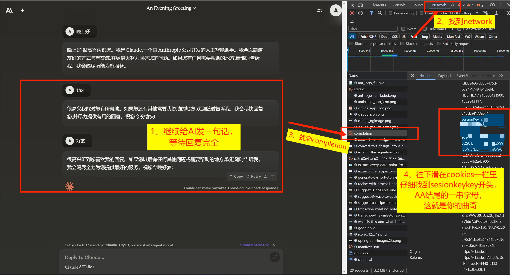
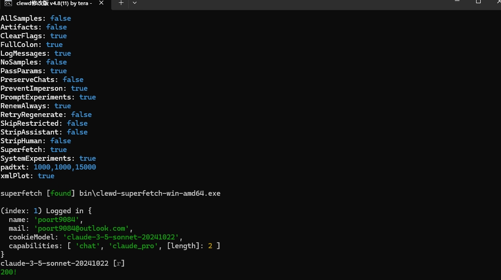

1. 预备知识
以下教程和社区交流过程中所可能用到的名词或者代称的解释
1.1 Large Language Model (LLM)
这个就是我们俗称的“AI”啦，用中文翻译过来就是大语言模型，本质上是一个量化文件，不过你只要不是本地跑AI的话，基本上就不需要太了解这个啦，直接跳过往下看就好，llm的作用十分简单粗暴，你发送文本给llm，llm会给你输出对应的文本回应，以此来模拟并且达成人类“交流”的场景，在接下来你可能会比较常见的模型会有GPT-4o（Open AI旗下所发布的模型，简称4o）或者Claude3.5sonnet（A社“Anthropic”旗下所发布的模型，简称3.5s），当然你可能还听说过很多国内的大语言模型，例如千问通义或者豆包，这些就不再做相关赘述。同样，在这个“AI”大家庭中，llm也有属于自己的不同的兄弟姐妹，例如SD（Stable Diffusion）可根据文本描述生成各种风格和主题的图像，或者功能更全面的多模态模型（不过说起来4o还有3.5s本质上应该算是多模态模型？但是既然是导入酒馆使用的话这个无伤大雅）感兴趣的可以自行去搜索。
示例模型：GPT-4, Claude 3.51.2 后端（加载器，Loader…）
这个名词的含义有点广泛，在本教程里面只单一论述与AI相关的作用，后端本质上是运行和加载llm模型（也就是那个量化文件），使其可以正常运作（如果你不太理解的话，可以把llm比做电灯，后端大概就是电源，只有接通了电源之后，电灯才可以正常的开始工作）如果你只是单纯使用酒馆的话，与后端相关的项目可能用的就比较少，甚至不会接触，所以大概了解一下就好了。
1.3 前端（例如silly Tavern）
了解完后端之后，我们再了解一下前端是什么，前端就是在后端的支持下能够让你更加方便的去操作并且调试llm的东西，所以你可以在st（silly Taveran）上面，制作各种各样你喜欢的AI角色卡，好让llm可以根据你的设置，提供更加令人满意的回复。（例如：你直接运行llm，发送文本“你好，你是谁？”收到的回复大概率是“我是由xxx公司所研发的xxx大模型”但是如果你使用前端制作了AI角色卡，在AI角色卡中设定成一个可爱的小猫娘，当你再次提问收到来自llm的回复的时候就会得到“你好，我是一只可爱的小猫娘！”）若是还不理解的话，我们可以引用之前的比喻，后端是电源，llm是电灯，那么前端就是电灯的灯罩，通过这个灯罩可以让电灯的光芒进行改变，发出令你更加喜爱的光色。像其他更多更出名的前端，那就是例如chat gbt，Claude，豆包等AI问答网页。
注：前端本身无法直接交互llm
1.4 API（敲黑板，重点）
这个名词在你玩AI的时候应该会很常见，也是游玩使用酒馆的一个重要前提，首先我们来讲讲API到底是什么？API是后端所提供的一个标准接口，用于连接前端进行使用。（就像后端电源已经运行好了llm电灯，而API就是电灯连接灯罩的那个螺丝口）所以看到了这一步，你也应该明白，如果自己想要开始畅玩酒馆的话，肯定是要一条运行模型的API，就此说明一下，如果你只是想快速的游玩酒馆，那你只需要大概理解API就是一个网址，当你正确使用完这个网址之后，你的酒馆才能正常开始对话。
这些是比较常见的API地址 Claude的API接口地址是https://api.anthropic.com/v1 Open AI的API接口地址是 https://api.openai.com/v1
1.5 相关计算机常识和名词讲解（非必要阅读）
Git: 代码管理工具, 你可以用这个在GitHub上下载很多好玩的代码仓库到你的本地, 然后运行起来. 后文要讲述的很多后端和前端, 例如llama.cpp, tabbyAPI, SillyTavern等, 都需要(推荐使用)用到Git来下载
GitHub：是一个开发者平台，允许开发者创建、存储、管理和分享他们的代码. 你可以在这里找到很多优秀的项目并使用git命令下载或克隆(clone)到你的计算机并运行
克隆, clone: Git提供的一个命令, 通过这个命令你可以将GitHub上的仓库下载到本地
命令, 运行: 在本文中, 命令这个词 尤指 你打开命令行界面, 例如Windows下的powershell或者CMD, Linux或MacOS下的终端, 然后输入一些命令来运行
虚拟环境: 很多时候, 不同的代码仓库需要不同的Python模块, 而这些模块之间很可能会起冲突. 这时候就需要虚拟环境派上用场了. 有了虚拟环境, 只需要将不同的代码仓库放到不同的虚拟环境中, 当使用某个仓库时就激活这个虚拟环境
路径, 目录: 是你存放下载下来的模型仓库的地方. 你必须先进入到相应的目录, 才能运行仓库中的代码, 或者是激活虚拟环境, 或者是安装Python模块. 就好比你把一包纸放在厕所里, 那你就必须进入厕所才能拿到这包纸, 你不能在厨房里拿到这包纸. 有的时候需要注意区分相对路径和绝对路径
2.开始实操
正确开始使用并且游玩酒馆的教程
注：教程开始前，先进行一个建议声明，请完全删除所有你从b站或者其他各个平台所下载来的各种博主所分享的“一键包”，因为这些一键包不仅难以更新，之中可能还会存在某些功能缺失或者后续各种各样的报错，并且还会让你丧失自己部署开源项目的能力，变成一个衣来伸手，饭来张口的大笨蛋。
2.1魔法上网
都能来上Discord了，这个应该大致都能了解了，当然可能你现有的魔法工具节点不是那么纯净，之后的一些部署可能难以胜任，所以关于魔法工具可以去社区群里问一下其他的大佬让大佬们分享给你，在本教程里面就不做相关赘述。
2.2酒馆的部署教程
酒馆（sillyTavern）：是gitub上面的一个开源项目。相信都已经加入这个社区了，或多或少都会了解。如果你之前有下载各个博主所使用的所谓的一件包，请立马删除，并且跟着我的步骤进行相关的酒馆部署。
注：部署的全过程都需要一个良好的魔法环境
第一步 部署酒馆前先下载必要的运行环境node.js
下载地址：https://nodejs.org/en去gitub上面下载酒馆的压缩包
gitub项目地址：https://github.com/SillyTavern/SillyTavern进阶下载方法：git（有兴趣可以自己百度或者询问其他大佬，在此不多赘述）
下载解压完成之后，点击酒馆的项目文件夹，双击运行.bat文件，可以成功运行进入酒馆页面，就代表你已经部署成功啦
2.3酒馆的API连接（重中之重）
如果你已经详细阅读了之前的教程，你就会意识到单单下载完酒馆是无法进行运行的，这个时候我们就需要API来进行连接啦，如果你是使用的官方的API，或者其他的代理，那以下教程可以不用理会，但如果没有的话，那就跟我一起动手操作吧。
注：最好不要在淘宝的奸商那里购买相关的API服务，这个要坑老多钱了，而且更过分的是这些商家大多还用的都是掺水的模型，不仅让你花了钱，还不让你讨到好。当然如果你实在嫌麻烦或者钱多不怕花，那当然是可以使用淘宝的API。
2.4Clewd使用和相关介绍
那既然官方的API太贵，淘宝商家的API又把我当傻子糊弄，那我该如何使用到优质又“免费”的API呢？那接下来就由我们的Clewd隆重出场！！
Clewd 是一个开源的 LLM 模型代理，它允许你使用 OpenAI 的 API 访问多个模型，并使用代理进行模型调用。Clewd 的主要功能包括：
- 代理多个模型：Clewd 可以代理多个模型，包括 OpenAI 的 GPT-3 和 GPT-4 等模型。
- 模型调用：Clewd 提供了模型调用的 API，你可以使用这个 API 调用代理的模型。
如果你一时间看不太懂也没关系啦,根据我的教程一步一步来部署使用吧
同样的，Clewd也是gitub上面的一个开源项目，首先我们需要把Clewd下载下来
注：与Clewd相关的步骤需要特别纯净的魔法网络环境，不然甚至无法下载
下载地址是：https://github.com/teralomaniac/clewd操作方法和下载酒馆时一样，解压后打开文件目录，双击.bat运行，首次运行后，Clewd内会跳出config文件
好啦，到这一步先暂停一下。
首先我们要拥有一个Cluade官方账号，没有的话可以到淘宝购买一个账号或者动动小手问一下AI如何注册克劳德账号？很简单的啦，这个就不多说了。
拥有账号之后点击登录进去，进入到AI问答页面
地址：https://claude.ai/new然后先打开网页开发人员工具（键盘点击f12），然后点击到Network选项，随后不要多余操作，直接给克劳德发送任意对话，收到回复后会跳出Completion，点击该选项，在弹出的代码中往下翻，找出Cookie栏目，将其中sessionKey项复制出，并按照sessionKey=sk-ant-sid01-xxxxxAA格式组合保存。
复制完之后回到Clewd文件夹，点击config文件，打开后找到CookieArray栏目，在其中填入你刚刚复制的cookie
比如
"CookieArray": ["cookie1","cookie2","cookie3"]这样你的Clewd就部署完成啦，双击.bat进行使用吧！
2.5Clewd报错和酒馆的接入
当你双击.bat进行运行后，如果能正常弹出你的姓名和邮箱等信息的时候，就是属于运行成功啦
下列是正常运行的示例图,如果不是这个界面的话，就是报错了,请根据下面的链接对比你的报错信息进行更改和修正
如果遇到报错可以看以下链接的详细教程
https://github.com/teralomaniac/clewd/wiki/Troubleshooting备注：如果出现其他的错报界面则多半是魔法问题，要检查好自己的魔法是否正常使用，是否开启了服务模式和tun模式？如果不行的话建议更换魔法工具哦，可以问问社区的人一般都用什么魔法工具？让大佬们给你推荐
随后就是运行酒馆进行设置
点击小插头，在API的栏目下选择聊天补全（Chat competition），随后聊天补全源选择open AI，再点开反向代理（Reverse Proxy）中的下拉菜单，在代理服务器url（Proxy Server URL）中填入Clewd的反代理地址
代理地址:http://127.0.0.1:8444/v1随后点击显示外部模型，在open AI模型栏目中点击下拉菜单，下滑到External栏目下选择Claude3.5sonnet-20041022模型就可以了
随后随便找一张AI角色卡，发送消息进行测试，如果能正常收到回复，就代表API已经连接成功了，如果出现了错报信息，就把错报信息数复制粘贴到提问答疑频道进行搜索，会有相关的教程贴的。例如这个典型的400报错，我就去教程贴里面搜400就好了
最后祝你们在酒馆游玩愉快！
酒馆的进阶使用
搜索以下地址查询酒馆当中的世界书正则等详细的使用说明
https://gtss-ai-docs.barz.foo/chatting/sillytavern/get_resource.html